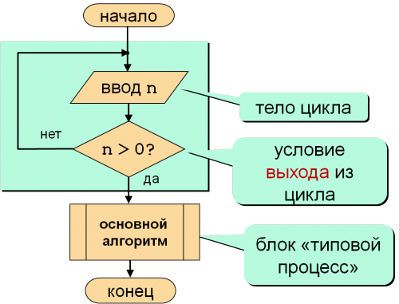
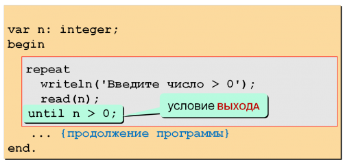
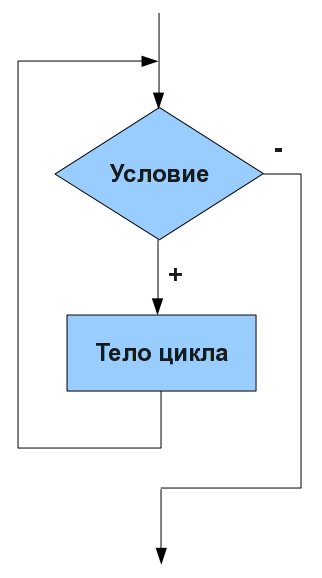

| Тема 2. Циклы Pascal-Паскаль. | ||||||||||||||||||||||||||||
| Назад | ||||||||||||||||||||||||||||
|
При решении подавляющего большинства задач (в том числе и весьма несложных) в программе практически невозможно задать в явном виде все операции, которые необходимо выполнить. В самом деле, пусть необходимо вычислить сумму первых n членов гармонического ряда: Очевидно, что с использованием только рассмотренных выше типов операторов можно составить программу лишь для фиксированного значения n. Например, при n=5 требуемые вычисления можно задать с помощью оператора присваивания вида: Если же значение n не фиксируется, а является исходным данным, вводимым в процессе выполнения программы (и даже константой, описанной в программе), то аналогичный оператор присваивания записать невозможно. Ибо запись вида Y:= 1+1/2+1/3+…+1/ n в языках программирования недопустима. Для устранения возникающих трудностей служат операторы цикла. Они позволяют повторять выполнение отдельных частей программы. Можно выделить четыре оператора цикла, присутствующих в том или ином виде во всех языках программирования:
Простой арифметический оператор цикла Паскаля (цикл с параметром)Вернемся к рассмотренной выше задаче вычисления суммы первых n членов гармонического ряда, правила которой невозможно задать в виде арифметического выражения, если значение n заранее не фиксировано. На самом деле вычисление этой суммы можно осуществить по очень простому и компактному алгоритму: предварительно положим y=0 (с помощью оператора присваивания y:=0), а затем выполним оператор присваивания y:= y+1/ i для последовательных значений i= 1,2,…, n. При каждом очередном выполнении этого оператора к текущему значению y будет прибавляться очередное слагаемое. Как видно, в этом случае процесс вычислений будет носить циклический характер: оператор y:= y+1/i должен выполняться многократно, т.е. циклически, при различных значениях i. Этот пример циклического вычислительного процесса является весьма типичным; его характерные особенности состоят в том, что
Для компактного задания подобного рода вычислительных процессов и служит оператор цикла с параметром. Чаще всего используется следующий вид этого оператора В Паскале: где for (для), to (увеличиваясь к) и do (выполнять, делать) – служебные слова, V – переменная порядкового типа, называемая параметром цикла, Е1 и Е2 – выражения того же типа, что и параметр цикла, S – оператор, который и выполняется многократно в цикле, называемый телом цикла. Заметим, что в Паскале после do должен стоять один оператор, если необходимо выполнить несколько действий, то они должны быть объединены в один составной оператор путем заключения в операторные скобки. Этот оператор цикла Паскаля предусматривает присваивание параметру цикла V последовательных значений от начального значения, равного значению выражения Е1, до конечного значения, равного значению выражения Е2, т.е. при каждом повторении выполняется оператор присваивания V:= succ( V), и выполнение оператора S при каждом значении параметра цикла V. При этом значения выражений Е1 и Е2 вычисляются один раз, при входе в оператор цикла, а значение параметра цикла V не должно изменяться в результате выполнения оператора S. Если заданное конечное значение меньше начального значения (что допустимо), то оператор S не выполняется ни разу. В Паскале считается, что при нормальном завершении выполнения оператора цикла значение параметра цикла не определено. С использованием оператора цикла с параметром алгоритм вычисления суммы первых n членов гармонического ряда может быть задан следующим образом: Пример кода программы для суммирования первых n членов гармонического рядаВ некоторых случаях бывает удобно, чтобы параметр цикла Паскаля принимал последовательные, но не возрастающие, а убывающие значения. Для таких случаев в Паскале предусмотрен оператор цикла с параметром следующего вида: где downto (уменьшаясь к) – служебное слово, а все остальные слова и выражения имеют прежний смысл. Изменение параметра цикла от большего значения к меньшему происходит при выполнении присваивания V:=pred( V). Заметим, что начальное значение может быть меньше конечного значения. В этом случае оператор S не выполнится ни разу. Значение параметра цикла по завершении выполнения такого цикла так же считается неопределенным. Следует запомнить и то, что для обоих вариантов записи цикла с параметром справедливо: если начальное и конечное значения равны, то тело цикла (оператор S) выполнится один раз. Заметим так же, что параметр цикла может и не использоваться в теле цикла, так что основное его назначение – это управление числом повторений цикла. Например, значение y= x n, где n>=0 – целое, можно вычислить по следующему алгоритму: предварительно положить y=1, а затем n раз домножить это значение на x: Пример кода программы цикла ПаскаляКак видно, здесь параметр цикла i служит лишь для того, чтобы тело цикла (оператор y:= y* x) выполнилось нужное число раз. Арифметический оператор цикла Паскаля с произвольным шагомЕстественным усложнением простого арифметического цикла Паскаля, является цикл, в котором параметр цикла изменяется не на 1, а на произвольную величину – шаг приращения. При этом в процессе выполнения цикла шаг изменяется по заданному закону. Стандартные операторы для реализации такого цикла есть в Форте, в других языках их приходится организовывать из простейшего арифметического цикла. Итерационные операторы цикла ПаскаляИтерационные циклы отличаются от циклов с параметром тем, что в них заранее неизвестно число повторений. Пусть мы отправляемся за грибами и возвращаемся домой, когда корзина наполнится. Все грибники делятся на 2 категории:
Отсюда получаются два варианта реализации итерационных циклов: В цикле с предусловием сначала проверяется условие, а потом делается шаг. Грибник придет с полной или почти полной корзиной. В цикле с постусловием – сначала шаг, а потом проверка. Как всякий нормальный грибник, этот принесет полную или слегка переполненную корзину. Какой алгоритм выбрать? Это зависит от конкретной задачи. Если, сделав шаг без проверки, можно свалиться в яму, то лучше проверка вначале (как слепой с палочкой). Ну, а если шаг без проверки вас не пугает, то можно отложить ее до завершения шага. Нужно также проанализировать событие, которого мы ожидаем. Если оно может случиться до первого шага, то нужен цикл с предусловием. А если событие не может случиться до первого шага, то нужен цикл с постусловием. Оператор цикла Паскаля с постусловием
Блок-схема решения примера:

Решение на Паскале:

Рассмотрим теперь математическую задачу. Пусть нам необходимо вычислить сумму первых членов гармонического ряда, удовлетворяющих условию 1/i>= e, где 0< e<1, а i=1,2,3…...Эту задачу можно решить по следующему алгоритму: положить предварительно y=0 и i=0, а затем в цикле увеличивать i на 1, к значению y добавлять очередное слагаемое 1/ i до тех пор, пока текущее значение 1/ i впервые окажется больше заданного значения 0< e<1. Очевидно, что число повторений этого цикла заранее не известно. В подобного рода случаях мы можем лишь сформулировать условие, при выполнении которого процесс добавления к сумме очередного слагаемого должен завершиться. Для задания таких вычислительных процессов и служит оператор цикла Паскаля с постусловием. Этот оператор имеет вид: где repeat (повторять) и until (до) – служебные слова, через Si обозначен любой оператор Паскаля, а через В – логическое выражение. При выполнении этого оператора цикла последовательность операторов, находящихся между словами repeat и until, выполнится один или более раз. Этот процесс завершается, когда после очередного выполнения заданной последовательности операторов логическое выражение В примет (впервые) значение true. Таким образом, с помощью логического выражения В задается условие завершения выполнения оператора цикла. Поскольку в данном случае проверка условия производится после выполнения последовательности операторов (тела цикла), этот оператор цикла и называется оператором цикла с постусловием. С использованием этого вида оператора цикла Паскаля задача о суммировании первых членов гармонического ряда, удовлетворяющих заданному условию, может быть реализована следующим образом: Пример кода оператора цикла Паскаля с постусловиемЗаметим, что оператор цикла с постусловием является более общим, чем оператор цикла с параметром — любой циклический процесс, задаваемый с помощью цикла с параметром можно представить в виде цикла с постусловием. Обратное утверждение неверно. Например, задача о суммировании первых n членов гармонического ряда, рассмотренная ранее, с оператором цикла с постусловием будет выглядеть так: Пример кода оператора цикла Паскаля с постусловиемОператор цикла Паскаля с предусловиемЦикл While
Цикл
Блок-схема, соответствующая циклу while в
Паскале:  Относится к тому же типу циклов, что и For, — цикл с предусловием. С его помощью можно создать безусловный цикл, например while(1) — бесконечный цикл. Чтобы его закончить, нужно использовать служебное слово break. В случае оператора цикла Паскаля с постусловием входящая в него последовательность операторов заведомо будет выполняться хотя бы один раз. Между тем довольно часто встречаются такие циклические процессы, когда число повторений цикла тоже неизвестно заранее, но при некоторых значениях исходных данных предусмотренные в цикле действия вообще не должны выполняться, и даже однократное выполнение этих действий может привести к неверным или неопределенным результатам. Пусть, например, дано вещественное число М. Требуется найти наименьшее целое неотрицательное число k, при котором 3 k> M. Эту задачу можно решить по следующему алгоритму: предварительно положить y=1 и k=0; затем в цикле домножать значение y на 3 и увеличивать значение k на 1 до тех пор, пока текущее значение y впервые окажется больше значения М. На первый взгляд, здесь можно воспользоваться оператором цикла с постусловием: Пример кода оператора цикла Паскаля с постусловиемОднако нетрудно убедиться в том, что при M<1 будет получен неправильный результат k=1, тогда как должно быть получено k=0: в этом случае предварительно сформированное значение k=0 является окончательным результатом и действия, предусмотренные в цикле, выполняться не должны. Для задания подобного рода вычислительных процессов, когда число повторений цикла заранее неизвестно и действия, предусмотренные в цикле, могут вообще не выполняться, и служит оператор цикла с предусловием. Этот оператор цикла имеет в Паскале следующий вид: где while (пока), do (делать, выполнять) – служебные слова, В – логическое выражение, S – оператор. Здесь оператор S выполняется ноль или более раз, но перед каждым очередным его выполнением вычисляется значение выражения В, и оператор S выполняется только в том случае, когда значение выражения В true. Выполнение оператора цикла завершается, когда выражение В впервые принимает значение false. Если это значение выражение В принимает при первом же его вычислении, то оператор S не выполнится ни разу. В рассматриваемой нами задаче правильное значение k при любом значении М может быть получено следующим образом: Пример кода оператора цикла Паскаля с предусловиемОператор цикла Паскаля с предусловием можно считать наиболее универсальным – с использованием таких операторов можно задать и циклические процессы, определяемые операторами цикла с параметром и постусловием. Отметим отличия и особенности хорошего стиля работы с рассмотренными циклическими операторами.
Оператор, который выполняется в цикле, сам может быть циклом. Это относится ко всем видам циклов. В результате мы получаем вложенные циклы. Механизм работы вложенных циклов удобнее всего рассмотреть на примере вложенных циклов с параметром. Пусть нам нужно описать работу электронных часов, начиная с момента времени 0 часов, 0 минут, 0 секунд. Значение минут станет равным 1 только после того, как секунды «пробегут» все последовательные значения от 0 до 59. Часы изменят свое значение на 1 только после того, как минуты «пробегут» все последовательные значения от 0 до 59. Таким образом, вывод всех значений времени от начала суток до конца суток может быть представлен следующим фрагментом программы: Для удобства реализации циклических структур на Паскале в последних версиях языка введены операторы break и continue, применяемые внутри циклов. Они расширяют возможности использования циклов и улучшают структуру программы. В процессе выполнения тела цикла до полного завершения цикла могут возникнуть дополнительные условия, требующие завершения цикла. В этом случае цикл может быть прекращен оператором break. В ходе выполнения цикла может возникнуть условие, при котором необходимо пропустить все или некоторые действия, предусмотренные в цикле, не прекращая работу цикла совсем. Для этого используется оператор continue, который передает управление в ту точку программы, где проверяется условие продолжения или прекращения цикла. |
||||||||||||||||||||||||||||
| Конспект подготовлен Бакулиным А. М. 2022 год. | ||||||||||||||||||||||||||||